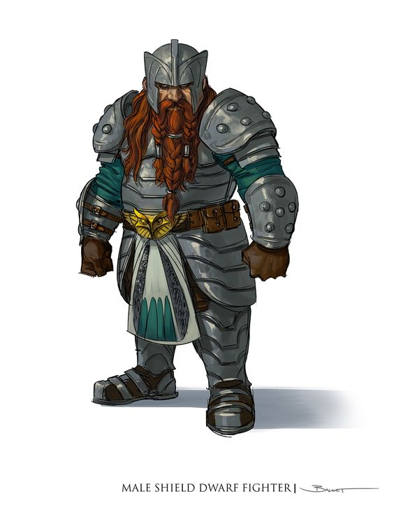

"ESTÁ ATRASADO, ELFO!", O DROW OUVIU O TOM ÁSPERO DE uma voz familiar. Bruenor Martelo de Batalha subiu pelas costas do adversário morto,
desconsiderando o fato de que o pesado monstro jazia sobre seu amigo élfico. Apesar desse novo desconforto, o nariz grande, pontudo e várias
vezes quebrado do anão – bem como sua barba vermelha, raiada de branco, mas ainda cor de fogo – surgiu como uma visão agradável para Drizzt.
"Eu sabia que ia te encontrar encrencado se saísse para te procurar!" – R.A. Salvatore, A Estilha de Cristal
Reinos ricos de antiga grandeza, salões esculpidos nas raízes das montanhas, o eco de picaretas e martelos nas minas profundas e
nas forjas ardentes, um compromisso com o clã e a tradição, e um ódio impetuoso contra goblins e orcs – essas linhas comuns unem
todos os anões.
BAIXOS E ROBUSTOS
Audazes e resistentes, os anões são conhecidos como hábeis guerreiros, mineradores e trabalhadores em pedra e metal.
Embora tenham menos de 1,50 metro de altura, os anões são tão largos e compactos que podem pesar tanto quanto um humano
60 centímetros mais alto. Sua coragem e resistência compete facilmente com qualquer povo mais alto.
A pele dos anões varia do marrom escuro a um matiz mais pálido, tingido de vermelho, mas os tons mais comuns
são o castanho claro ou bronzeado, como certos tons terrosos. O cabelo é longo, mas de estilo simples, geralmente negro,
cinzento ou castanho, embora anões mais pálidos frequentemente possuem cabelos ruivos. Anões machos valorizam altamente
suas barbas e preparam-nas com cuidado.
LONGA MEMORIA, LONGO RANCOR
Anões podem viver mais de 400 anos, então os anões mais antigos ainda vivos muitas vezes lembram-se de um mundo muito diferente.
Por exemplo, alguns dos anões mais velhos que vivem na Cidadela de Felbarr (nos Reinos Esquecidos) lembram-se do dia, há mais de três séculos,
que os orcs conquistaram sua fortaleza, forçandoos a um exílio que durou mais de 250 anos. Essa longevidade concede aos anões uma perspectiva
sobre o mundo que falta às raças de menor longevidade, como os humanos e os halflings. Anões são sólidos e duradouros como suas amadas montanhas,
resistindo à passagem dos séculos com estoica resistência e poucas mudanças. Eles respeitam as tradições de seus clãs, traçando a história
de seus ancestrais a partir da fundação de suas mais antigas fortalezas, na juventude do próprio mundo, e não as abandonam facilmente.
Uma parte dessas tradições envolve a devoção aos deuses dos anões, aqueles que defendem os ideais anões de ser trabalhador,
hábil em combate e devoto à forja. Os anões são determinados e leais, fiéis à sua palavra e decididos quando agem, às vezes a ponto de serem
teimosos. Muitos anões têm um forte senso de justiça e demoram a se esquecer de erros cometidos contra eles.
Uma injustiça cometida contra um anão é uma ofensa para todo seu clã. O que começa como uma busca por vingança de um único anão,
pode se tornar a ambição de todo um clã.
CLÃS E REINOS
Os reinos anões estendem-se pelas profundezas das montanhas, onde eles mineram gemas e metais preciosos, e forjam itens admiráveis.
Eles amam a beleza e a arte dos metais preciosos e das joias finas e, em alguns anões, esse amor transforma-se em avareza.
O que não pode ser encontrado em suas montanhas, eles adquirem através do comércio. Eles não gostam de barcos, embora os comerciantes
humanos e halflings lidem frequentemente com o comércio de bens anões por rotas marítimas. Membros de confiança de outras raças são
bem-vindos em assentamentos anões, embora algumas áreas dessas cidades sejam vetadas até mesmo para eles. A unidade mor de uma sociedade anã
é o clã, e os anões valorizam altamente o status social. Mesmo anões que vivem longe de seus próprios reinos valorizam suas identidades e
filiações de clãs, reconhecem os anões parentes, e invocam os nomes de seus ancestrais em juramentos e xingamentos. Não possuir um clã é
o pior destino de um anão. Anões em outras terras são tipicamente artesãos, geralmente ferreiros, armeiros e joalheiros.
Alguns são mercenários ou guarda-costas, procurados pela sua coragem e lealdade, e bem recompensados por seus serviços.
DEUSES, OURO E CLÃ
Anões que seguem uma vida de aventuras podem ser motivados pelo desejo por tesouros
– para uso próprio, para um propósito específico ou mesmo a partir do desejo altruísta de ajudar os outros.
Outros anões são guiados pelo comando ou pela inspiração de uma divindade, um chamado direto ou simplesmente
o desejo de trazer glória a um dos deuses anões. O clã e os ancestrais de um anão também são motivações importantes.
Um anão pode buscar restaurar a honra perdida de um clã, vingar uma antiga ofensa sofrida pelo clã ou
reconquistar um lugar no clã depois de ter sido exilado. Ou um anão pode buscar por um machado empunhado por um poderoso ancestral,
perdido no campo de batalha há séculos.